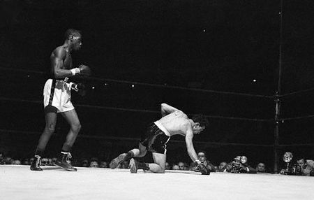

Willie Pep, born in 1922 in Middletown, Connecticut, made his professional debut in 1940 at the age of 18. Known for his extraordinary footwork and elusive style, Pep quickly gained recognition for his speed and defensive abilities. His debut marked the beginning of a career that would eventually make him one of the greatest featherweights in boxing history.
One of the most significant rivalries in boxing history, the fight between Willie Pep and Sandy Saddler in 1946 was a brutal contest for the World Featherweight title. Despite Pep's brilliant defensive skills, Saddler's power overwhelmed him, and Pep suffered a loss in this memorable bout. However, their rivalry would continue for years, and their future fights would go on to define their legacies.
After losing to Saddler in their first meeting, Pep faced him again in 1950 in a rematch for the World Featherweight title. In this fight, Pep displayed his incredible skills and strategy, using his elusive footwork and counterpunching to outmaneuver Saddler and win the fight, reclaiming the title.
Willie Pep is widely regarded as one of the greatest featherweight champions of all time. His career spanned over 26 years, and during this time, he became a two-time world champion. Known for his incredible boxing IQ, Pep won 229 of his 241 fights, including 65 knockouts. His unparalleled ability to avoid punches and outmaneuver his opponents made him an iconic figure in boxing history.
Despite his incredible success, Willie Pep faced numerous challenges throughout his career. After his defeat to Sandy Saddler, Pep struggled to regain his form but never gave up. Later in life, he faced personal struggles, including financial difficulties and the effects of his long career in the ring. However, his resilience and love for the sport helped him overcome these obstacles.